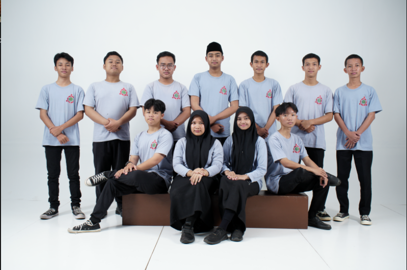

IT Club Website Official Release
2025-02-05 12:39:08

std::cout << "Halo, Dunia!" << std::endl;
Selamat datang di Website Resmi IT Club MAN 1 Metro!
IT Club adalah Organisasi yang berfokus pada Pemograman, Pengoperasian Komputer, dan Multimedia.
Organisasi IT Club merupakan perkumpulan siswa dan siswi di MAN 1 Metro yang tertarik pada bidang IT dan sebagai penadah minat serta mengembangkan bakat IT siswa dan siswi MAN 1 Metro.
Website ini adalah salah satu projek kecil kami yang juga akan dijasikan materi pembuatan dan desain website di Ekstrakurikuler IT Club. Website ini juga akan dijadikan sumber informasi, tutorial, dan arsip kegiatan ekstrakuriler di IT Club.